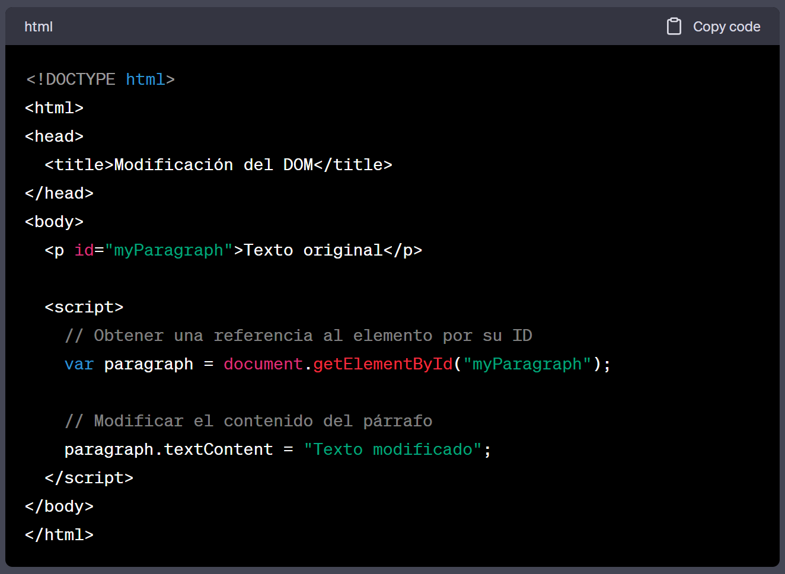
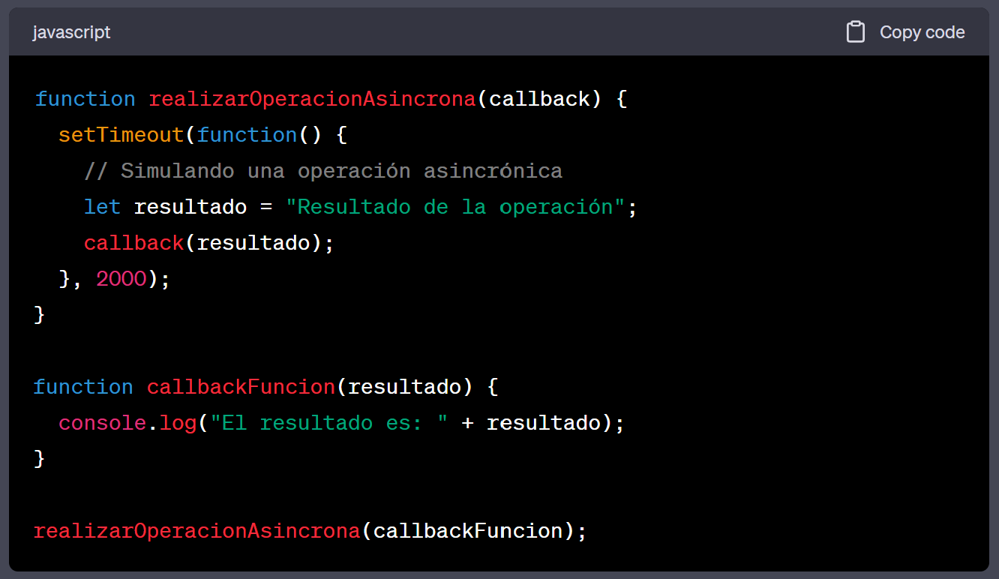
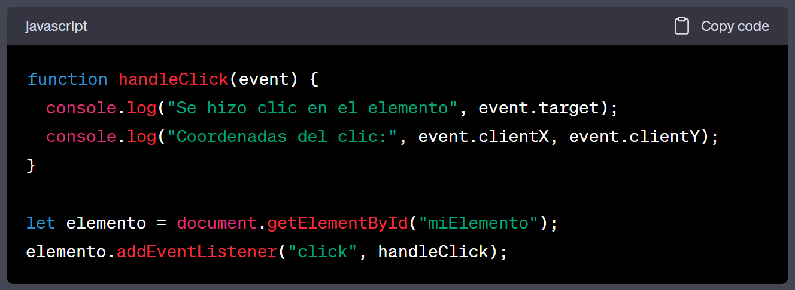

Utiliza ChatGPT y github Copilot para resolver la siguiente actividad. Antes de hacer los ejercicios, contesta las siguientes preguntas. Pregúntale a ChatGPT las preguntas, y verifica que lo que haya generado es correcto. Cuando sea necesario, agrega un ejemplo de código. Incluye una fuente que valide o invalide lo que generó. Agrega elementos de HTML con tus respuestas. (Protip: usa ChatGPT para que las respuestas las ponga directamente en elementos de html.)
Terminando las preguntas y los ejercicios, documenta tu experiencia con las herramientas en la sección de conclusiones.
Copilot: Al escribir "<p" la misma herramienta completaba con "class copilot" y la respuesta.
ChatGPT: Utilicé dos chats: el primero para las preguntas y el segundo para pasar las preguntas a formato html. En algunas ocasiones se hizo la pregunta y una aclaración para que no usara "var".
Bing AI: Esta inteligencia proporciona fuentes.
Alex: Estoy investigando por cuentas externas.
Fuentes: Para acceder tanto a mis fuentes como las de bing hay que hacer clic en un número (o letra) subrayada en la parte superior. Algo así
The structure of an HTML document (Document Object Model).
El DOM (Modelo de Objetos del Documento, por sus siglas en inglés) es una interfaz de programación de aplicaciones (API) para documentos HTML y XML. En términos simples, el DOM representa la estructura de un documento HTML/XML como un árbol de objetos.
DOM son las siglas de Document Object Model (Modelo de Objeto de Documento), que es la estructura del documento HTML. Una página HTML está formada por múltiples etiquetas HTML, anidadas una dentro de otra, formando un árbol de etiquetas relacionadas entre sí, que se denomina árbol DOM (o simplemente DOM ). 1
La estrucura de un documento HTML (Document Object Model). a
In the context of HTML and the DOM, a node is an object that represents an element, attribute, text or comment in an HTML document. Each DOM node is an object that has properties and methods that developers can use to access and manipulate the content of the web page.
En el contexto de HTML y el DOM, un nodo es un objeto que representa un elemento, atributo, texto o comentario en un documento HTML. Cada nodo del DOM es un objeto que tiene propiedades y métodos que los desarrolladores pueden utilizar para acceder y manipular el contenido de la página web.
Los elementos HTML, como <div>, <p>, <img>, son nodos del DOM que se utilizan para representar diferentes partes de la página web. Cada uno de estos elementos es un nodo que tiene propiedades como id, class, style y métodos como appendChild(), removeChild(), que se pueden usar para modificar su contenido y estructura.
Además de los elementos HTML, el DOM también tiene nodos para representar otros tipos de contenido en un documento HTML, como los atributos (id, class, src, etc.), el texto y los comentarios. Cada uno de estos nodos tiene sus propias propiedades y métodos que se pueden utilizar para acceder y manipular su contenido.
En resumen, un nodo en HTML y el DOM es un objeto que representa un elemento, atributo, texto o comentario en un documento HTML. Los desarrolladores pueden acceder y manipular estos nodos utilizando diferentes métodos y propiedades proporcionados por la API del DOM.
En el contexto del DOM, un nodo es un único punto en el árbol de nodos. Los nodos pueden ser varias cosas: el documento mismo, elementos, texto y comentarios. 2 Dicho de manera simple, un nodo es una etiqueta HTML sobre la que vamos a poder realizar operaciones de lectura y de escritura. 3
You can access an element from the DOM by using the getElementById() method.
Para acceder a un elemento del DOM, puedes utilizar diferentes métodos y propiedades proporcionados por la API del DOM. Aquí te presento algunos enfoques comunes para acceder a un elemento del DOM:
Acceso mediante el ID del elemento: Si conoces el ID único de un elemento, puedes utilizar el método getElementById() para obtener una referencia a ese elemento. Por ejemplo:
let element = document.getElementById("elementId");Acceso mediante el nombre de la etiqueta: Si deseas obtener una referencia a todos los elementos con una etiqueta HTML específica, puedes utilizar el método getElementsByTagName() para obtener una lista de elementos con esa etiqueta. Luego, puedes acceder al elemento deseado utilizando su índice. Por ejemplo:
let elements = document.getElementsByTagName("p");
let element = elements[0]; // Accede al primer párrafo (<p>) encontradoAcceso mediante la clase del elemento: Si deseas obtener una referencia a todos los elementos que tienen una clase CSS específica, puedes utilizar el método getElementsByClassName() para obtener una lista de elementos con esa clase. Al igual que con getElementsByTagName(), puedes acceder al elemento deseado utilizando su índice. Por ejemplo:
let elements = document.getElementsByClassName("className");
let element = elements[0]; // Accede al primer elemento con la clase "className"Acceso mediante el selector CSS: Si estás familiarizado con los selectores CSS, puedes utilizar el método querySelector() o querySelectorAll() para acceder a elementos del DOM utilizando un selector CSS. querySelector() devuelve el primer elemento que coincide con el selector, mientras que querySelectorAll() devuelve una lista de todos los elementos que coinciden. Por ejemplo:
let element = document.querySelector("#elementId"); // Accede al elemento con el ID "elementId"
let elements = document.querySelectorAll(".className"); // Accede a todos los elementos con la clase "className"Estos son solo algunos de los métodos más utilizados para acceder a elementos del DOM. Ten en cuenta que la elección del método dependerá de la estructura y los requisitos específicos de tu documento HTML.
Hay varias formas de acceder a un elemento del DOM. Una forma es a través de su ID utilizando el método getElementById de Javascript. Este método retorna un único nodo del HTML, porque solo en una página cada id debe ser único, es decir, no puede haber más de un elemento con el mismo ID. 4 Por ejemplo, para obtener el elemento con el id firstName, lo hacemos de la siguiente manera: document.getElementById("firstName"). 4
También se puede acceder a los elementos utilizando otros métodos como getElementsByClassName, getElementsByTagName, querySelector y querySelectorAll. 5
You can modify an element from the DOM by using the innerHTML property.
Para modificar un elemento del DOM, puedes utilizar diferentes métodos y propiedades proporcionados por la API del DOM. Aquí tienes algunos pasos generales para modificar un elemento del DOM:
getElementById(), getElementsByClassName(), getElementsByTagName(), o querySelector() para seleccionar el elemento según su ID, clase, etiqueta o selector CSS.textContent, innerHTML, value, src, href, entre otras, dependiendo del tipo de elemento.appendChild() para agregar un nuevo elemento como hijo, removeChild() para eliminar un hijo existente, setAttribute() para modificar un atributo, classList para añadir o eliminar clases, entre otros.Aquí hay un ejemplo sencillo que muestra cómo modificar el contenido de un elemento <p> utilizando JavaScript:
En este caso ChatGPT utilizó "var" ya que solo funciona ejemplificar. Lo dejaré así ya que es fiel a la idea de este ejercicio.
En este ejemplo, se obtiene una referencia al elemento <p> mediante su ID utilizando getElementById(). Luego, se utiliza la propiedad textContent para modificar el contenido del párrafo y cambiarlo a "Este es el nuevo contenido del párrafo".
Recuerda que estos son solo ejemplos básicos, y el DOM ofrece muchas más funcionalidades para modificar elementos, estilos, eventos, entre otros.
Para modificar un elemento del DOM se puede hacer una de las siguientes cosas: seleccionar elementos HTML, añadir o borrar oyentes de eventos, añadir, comprobar o borrar clases, añadir, cambiar o borrar atributos y añadir o borrar elementos HTML. 6
The difference between getElementby* and querySelector* is that getElementby* returns the first element that matches the specified ID, class, tag name, etc. while querySelector* returns the first element that matches the specified CSS selector.
La diferencia principal entre los métodos getElementBy* y querySelector* reside en la forma en que seleccionan y devuelven los elementos del DOM.
Los métodos getElementBy* (como getElementById, getElementsByTagName y getElementsByClassName) son métodos más antiguos y se utilizan para seleccionar elementos del DOM en función de criterios específicos, como el ID, la etiqueta o la clase. Estos métodos devuelven una colección en vivo de elementos que coinciden con los criterios de selección. Una colección en vivo significa que si se realizan cambios en el DOM después de haber obtenido la colección, la colección se actualizará automáticamente para reflejar los nuevos elementos que cumplan los criterios de selección. Sin embargo, las colecciones devueltas por estos métodos no son arrays, sino estructuras de datos denominadas "HTMLCollection" o "NodeList".
Por otro lado, los métodos querySelector* (como querySelector y querySelectorAll) son métodos más modernos y poderosos introducidos con CSS Selectors Level 3. Estos métodos utilizan selectores CSS para seleccionar elementos del DOM. Los selectores CSS permiten una mayor flexibilidad y precisión en la selección de elementos en comparación con los métodos getElementBy*. querySelector devuelve el primer elemento que coincide con el selector especificado, mientras que querySelectorAll devuelve una colección estática (no en vivo) de todos los elementos que coinciden con el selector. La colección devuelta por querySelectorAll es de tipo "NodeList".
En resumen, la diferencia principal es que los métodos getElementBy* seleccionan elementos del DOM según criterios específicos (como ID, etiqueta o clase) y devuelven colecciones en vivo de elementos, mientras que los métodos querySelector* utilizan selectores CSS para seleccionar elementos y devuelven colecciones estáticas de elementos que coinciden. Los métodos querySelector* son más flexibles y poderosos, especialmente cuando se trata de selecciones más complejas basadas en selectores CSS.
Los métodos getElementById, getElementsByClassName y getElementsByTagName son métodos especializados que permiten recuperar elementos del DOM a través de su ID, clase o nombre de etiqueta, respectivamente. Por otro lado, los métodos querySelector y querySelectorAll son más versátiles y permiten recuperar elementos del DOM utilizando selectores CSS.
Una diferencia importante entre estos métodos es que getElementById y querySelector retornan un único elemento, mientras que getElementsByClassName, getElementsByTagName y querySelectorAll retornan una lista de elementos. 7
An event is an action that occurs as a result of user interaction with the web page.
Un evento en el contexto de la programación se refiere a cualquier acción o suceso que ocurre dentro de un programa o aplicación y que puede ser detectado y manejado por el código. Los eventos pueden ser desencadenados por diversas interacciones del usuario, como hacer clic en un botón, mover el mouse, presionar una tecla, entre otros, o pueden ser generados por el propio sistema o la aplicación, como cargar una página, recibir datos de una solicitud HTTP, etc.
Cuando ocurre un evento, se puede ejecutar una función o un conjunto de instrucciones específicas que están asociadas a ese evento. Este proceso se conoce como "manejo de eventos". El manejo de eventos permite que las aplicaciones respondan y realicen acciones específicas en función de las interacciones del usuario o de otras condiciones definidas.
En la programación web, los eventos son fundamentales para la interactividad de las páginas y la respuesta a las acciones del usuario. Los lenguajes de programación como JavaScript permiten detectar y manejar eventos utilizando diferentes métodos y técnicas. Por ejemplo, se pueden utilizar event listeners (escuchadores de eventos) para registrar y responder a eventos específicos en elementos HTML, como hacer clic en un botón o enviar un formulario.
En resumen, un evento es un suceso o acción que ocurre en un programa o aplicación y que puede ser detectado y manejado por el código. Los eventos son esenciales para la interactividad y la respuesta a las acciones del usuario en aplicaciones y páginas web.
Un evento en Javascript es una acción o suceso que ocurre en el sistema que estás programando o en el navegador, y que te informa para que tu código pueda reaccionar ante ellos1. Por ejemplo, si el usuario hace clic en un botón o pulsa una tecla, se produce un evento1. Los eventos se pueden detectar y usar en los objetos del DOM y en el objeto window1. 8
A listener is a function that is called when an event occurs.
En el contexto de la programación, un listener (también conocido como "escuchador" o "manejador de eventos") es una función o método que se utiliza para detectar y responder a eventos específicos que ocurren en un programa o aplicación. Los listeners se utilizan comúnmente en el desarrollo web para capturar y manejar eventos en elementos HTML, como hacer clic en un botón, mover el mouse, presionar una tecla, etc.
Un listener se asocia a un evento particular y se registra en un elemento específico del DOM. Cuando ocurre ese evento en el elemento objetivo, el listener es activado y la función o el código asociado a él se ejecuta.
El proceso de registrar un listener en un elemento se conoce como "asignación de eventos" o "vinculación de eventos". El listener puede ser asignado utilizando métodos proporcionados por el lenguaje de programación utilizado, como JavaScript. Al asignar un listener, se especifica el tipo de evento al que se quiere responder y la función que se debe ejecutar cuando ocurra dicho evento.
Por ejemplo, en JavaScript, se puede asignar un listener de clic a un botón utilizando el método addEventListener(). El listener capturará el evento de clic en el botón y ejecutará la función definida cuando ocurra:
En este ejemplo, se asigna un listener de clic al botón con el ID "myButton". Cuando se haga clic en el botón, se ejecutará la función handleClick() y se imprimirá "Se hizo clic en el botón" en la consola.
Los listeners permiten que las aplicaciones respondan de forma interactiva a las acciones del usuario o a otros eventos específicos. Proporcionan un mecanismo flexible para capturar y manejar eventos en tiempo real, lo que contribuye a la interactividad y funcionalidad de las aplicaciones y sitios web.
Un listener (también conocido como oyente de eventos) es una función que se ejecuta cuando ocurre un evento específico en el elemento al que está asociado. 9 Por ejemplo, si se registra un listener para el evento click en un botón, la función se ejecutará cada vez que el usuario haga clic en ese botón.
A callback is a function that is passed as an argument to another function.
Un callback, en el ámbito de la programación, es una función que se pasa como argumento a otra función y que se invoca o llama de vuelta en un momento posterior. El concepto de los callbacks está estrechamente relacionado con la programación asíncrona y la capacidad de ejecutar tareas en un orden no lineal.
Cuando se utiliza un callback, se le proporciona a una función principal la lógica que se debe ejecutar después de que se complete una operación asincrónica o un evento ocurra. En lugar de bloquear la ejecución y esperar a que la operación se complete, la función principal continúa su ejecución y, cuando sea apropiado, invoca al callback para procesar el resultado o manejar el evento.
Los callbacks son especialmente útiles en situaciones en las que se requiere ejecutar tareas asincrónicas, como realizar una solicitud HTTP, leer un archivo, realizar operaciones de base de datos, etc. En lugar de esperar de forma síncrona a que se complete la operación, se pasa un callback que se ejecutará una vez que la operación haya finalizado.
Aquí tienes un ejemplo sencillo en JavaScript que muestra el uso de un callback:
En este ejemplo, la función realizarOperacionAsincrona realiza una operación asincrónica simulada utilizando setTimeout. Después de 2 segundos, se llama al callback pasado como argumento y se le pasa el resultado de la operación. En este caso, el callback es la función callbackFuncion, que simplemente imprime el resultado en la consola.
Los callbacks permiten la ejecución no bloqueante de tareas asincrónicas y brindan flexibilidad y control en la secuencia de ejecución del código. Además, son fundamentales en muchos aspectos de la programación, como el manejo de eventos, la programación orientada a eventos y la programación basada en llamadas de retorno.
Un callback (llamada de vuelta) es una función que se pasa como argumento a otra función y que se ejecuta después de que esta última haya terminado de ejecutarse. 10 Por ejemplo, si se tiene una función A que recibe como argumento una función B, B es un callback y se ejecutará después de que A haya terminado de ejecutarse.
An event object is an object that contains information about an event.
Un objeto de evento es un objeto que se crea y proporciona automáticamente cuando ocurre un evento en un programa o aplicación. Este objeto contiene información detallada sobre el evento que ha ocurrido, como el tipo de evento, el objetivo del evento (elemento HTML relacionado), coordenadas del puntero del mouse, teclas presionadas, etc. Los objetos de evento se utilizan para acceder y utilizar esta información relacionada con el evento.
En el contexto de la programación web, los objetos de evento son particularmente relevantes ya que se utilizan para capturar y manejar eventos en el DOM (Document Object Model). Cada vez que ocurre un evento, se crea un objeto de evento y se pasa como argumento a la función de manejo de eventos asociada.
Los objetos de evento varían en su estructura y propiedades dependiendo del lenguaje de programación utilizado y del tipo de evento específico. Algunas propiedades comunes que se encuentran en los objetos de evento incluyen:
type: Indica el tipo de evento que ha ocurrido (por ejemplo, "click", "keyup", "submit").target: Hace referencia al elemento HTML específico en el que ocurrió el evento.currentTarget: Hace referencia al elemento HTML actualmente en el que se está manejando el evento (útil en casos de propagación de eventos).clientX, clientY: Coordenadas del puntero del mouse en el momento del evento, en relación con la ventana del navegador.keyCode, key: Información sobre la tecla presionada durante un evento de teclado.preventDefault(): Método que evita el comportamiento predeterminado asociado al evento.Aquí tienes un ejemplo de cómo se puede utilizar un objeto de evento en JavaScript para obtener información sobre un evento de clic:
En este ejemplo, la función handleClick recibe el objeto de evento como argumento. A través de este objeto, se puede acceder a la información relacionada con el evento, como el elemento HTML en el que se hizo clic (event.target) y las coordenadas del clic (event.clientX, event.clientY).
Los objetos de evento proporcionan un mecanismo poderoso para acceder y utilizar información relacionada con los eventos en un programa o aplicación. Permiten que el código responda de manera adecuada y personalizada a los eventos que ocurren, lo que contribuye a la interactividad y funcionalidad de la aplicación.
Un objeto de evento es un objeto que se crea automáticamente cuando ocurre un evento en el navegador y contiene información sobre el evento en sí. 11 Por ejemplo, si el usuario hace clic en un botón, se crea un objeto de evento que contiene información sobre el evento click, como las coordenadas del cursor en el momento del clic.
Perdón profe pero no puedo seguir trabajando en esta página. Por favor haga clic en este link para la parte de código.